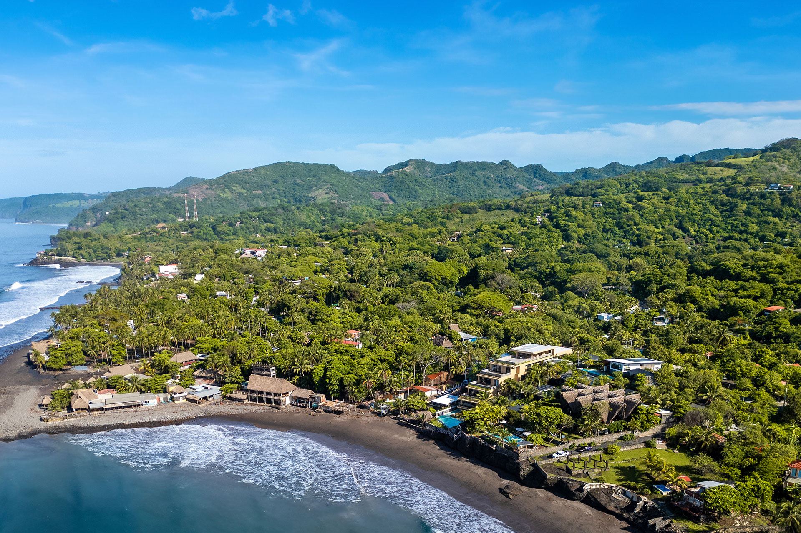
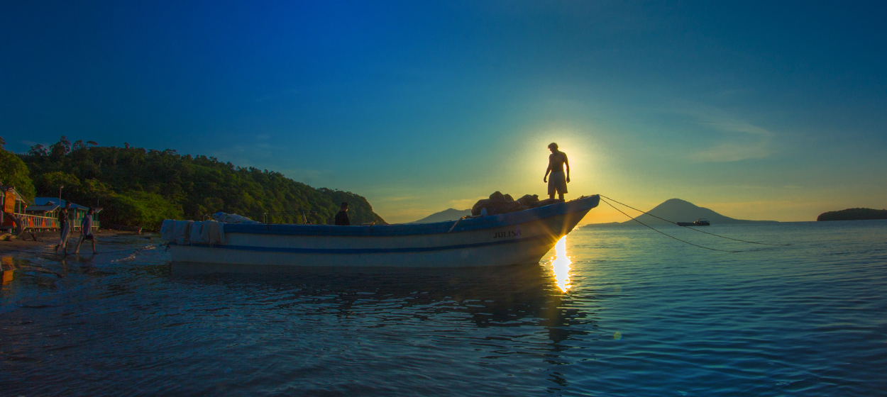

El Tunco
Independientemente de a quién le preguntes, todos se referirán a la playa de El Tunco como la
capital del surf de El Salvador.
Una playa que debe su nombre a la enorme roca, semisumergida en el mar, que en algún tiempo remoto
sugirió la forma de un cerdo, "tunco" en el argot salvadoreño.
Con el paso de los años, El Tunco se ha convertido en un microcosmos donde se respira un ambiente
cosmopolita, y la diversión y la ola "cool" son abundantes.,
Es un destino imperdible para el surfista extranjero y aquellos que buscan sumergirse en la cultura
bohemia y casual del surf.
y para aquellos que buscan sumergirse en la cultura bohemia y casual del surf.
Cómo llegar
Desde San Salvador, tome la carretera hasta el puerto de La Libertad, luego la circunvalación
"Camino a Surf City" y continúe hacia el oeste por la Carretera Costera hasta el Kilómetro 43.
Un arco de madera indica que has llegado a una de las capitales mundiales del surf

Playa el Zonte
El Zonte
Chiltiupán: La Libertad
La playa El Zonte es uno de los destinos de surf más emblemáticos de El Salvador.
Esta pequeña comunidad costera se ubica en el kilómetro 53 de la carretera El Litoral, en el
municipio de Chiltiupán, La Libertad.
Este lugar mantiene su estilo bohemio y playero original, a pesar de que la demanda de turismo ha
aumentado.
La zona junto al río El Zonte ofrece numerosos hostales, casas de alquiler, hoteles y restaurantes,
así como alquiler de tablas de surf y clases de este deporte.
Más allá de la pequeña ría, hacia el oeste, hay casas de playa privadas y varios hoteles pequeños,
donde también se puede ir por el día.
Hacia el este, hay varios hoteles modernos y de muy buena calidad y, entre ellos, un centro de
entrenamiento de surf, únicos en el mundo.
La playa El Zonte cuenta con varios tramos para la práctica de este deporte.
La más popular es La Punta, una formación rocosa, con un quiebre a la derecha, que crea una ola
rápida, con una larga línea y a veces túneles de olas

Golfo de Fonseca
Golfo de Fonseca
Este espacio natural entre El Salvador, Honduras y Nicaragua alberga un impresionante archipiélago
volcánico y diferentes islas como Meanguera, Conchaguita, Punta Zacate, Los Farallones, entre otras.
El Golfo se puede ver en barco, partiendo desde el Muelle de La Unión o el Muelle de Los Coquitos.